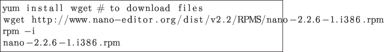

Next: About this document ... Up: EXERCISE 3 Linux installation Previous: Additional requirements

To limit the number of processes that may be run simultaneously by a user belonging to users group to 10.
Automatic logout after 5 minutes of inactivity.